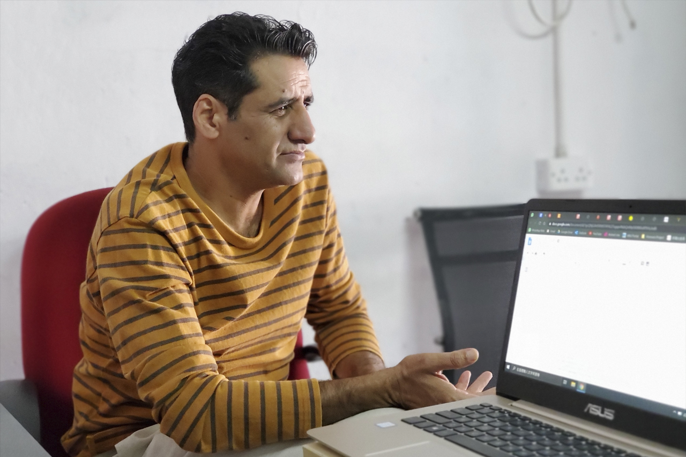
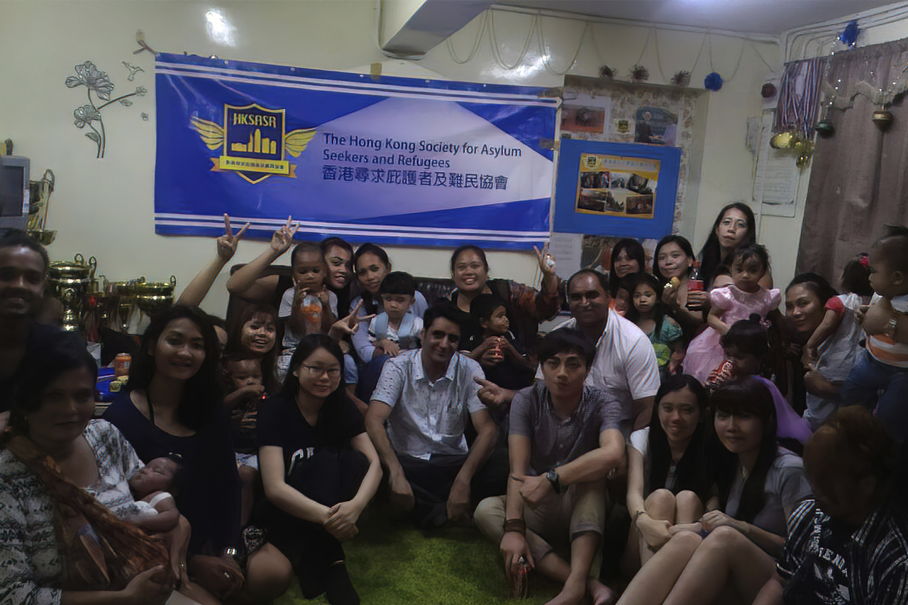
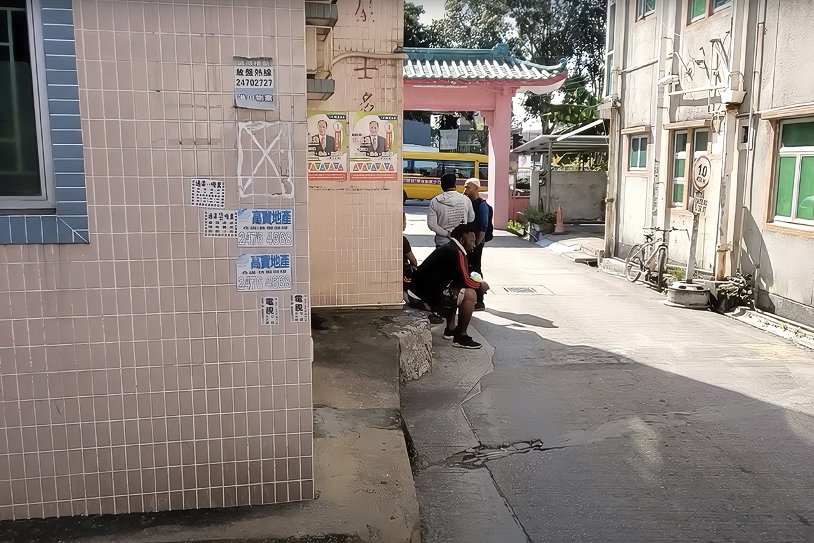

From the archway of Lo Uk Village in Yuen Long, follow the path to a rural house, pick up the stairs to the second floor, and walk into a 500-foot flat. This is the apartment Tariq Mehmood Raja shares with three asylum seekers, and it also serves as the office of the Hong Kong Society for Asylum-seekers and Refugees (HKSASR).
Sitting on a grimy armchair, Raja, the head of the Society, describes an asylum seeker's life in Hong Kong, where the long wait not only drains youth but also destroys will and hope. "We come here without any work, never having anything to do but stay at home and stare blankly, day after day, year after year," Raja stated.
"Many asylum seekers are intellectuals in their own countries - doctors, lawyers, businessmen, teachers - they never come to Hong Kong for the money," continued Raja, "losing out on their reputations, properties, families, careers, just to stay alive."

Raja furrows his brow in despair as he relates the plight of asylum seekers in Hong Kong. (Credit: Data Story)
This Pakistani fugitive from political persecution has been stranded in Hong Kong for 13 years, from 29 to 42, until his claim for Non-refoulement Protection was confirmed in 2015, pending recognition of his refugee status by the United Nations. Even though more than a decade has been exhausted, a loss that can never be restored, Raja has yet to receive formal status.
"Please don't waste our time! The most precious time of our lives is spent on these pointless waits!" Raja said agitatedly, "the people sitting in the Legislative Council or at the Immigration Department are talking nonsense, and they don't really understand what it's like to be an asylum seeker."
Hong Kong is not a refugee resettlement city as it is not a signatory to the United Nations’ Refugee Convention, but the government is obliged to screen torture and persecution claims. If a claimant is recognized, he or she will be sent to a third country by the United Nations High Commissioner for Refugees (UNHCR), and ultimately Hong Kong will not have to accept these people. In other words, the city was never their destination, merely a "stopover."
The only way to seek asylum is by filing the Non-refoulement Protection, and the average processing time for each claim is about ten weeks, according to a March 2019 Legislative Council document. If the Immigration Department rejects a claim, the individual can appeal to the Torture Claims Appeals Board, then the Court of Appeal and the Court of Final Appeal.
Nonetheless, the request has a roughly 1 percent substantiation rate based on the latest figures, significantly lower than the global average of 30 percent and European average of 60 percent, which means non-stop appeals will be needed. Immigration Department statistics show that between 2009 and April 2020, only 231 out of 22,737 claims were successful.
Raja said that he had conversed with several officials, but none of them realized the seriousness of the situation."We are dying in another way, and they are depriving us of our right to start lives over," Raja said desperately, "at first we all thought we would leave Hong Kong in a few months."
As of October 2020, the majority of pending Non-refoulement Protection applicants are from Southeast Asian countries, with the largest number coming from Vietnam, contributing approximately 34 percent. Moreover, 49 percent of the claimants' status in Hong Kong are illegal immigrants, while 35 percent are overstayers, according to the Hong Kong Immigration Department.
Since 2014, when the Hong Kong government launched the Unified Screening Mechanism, or USM, the cumulative number of pending Non-refoulement Protection has dropped from 9,618 to 266 in five years. In 2018 alone, the Immigration Department determined more than 5,400 cases.
"The Immigration Department has been blindly improving its efficiency, but they neglected to deal with it humanely," said Dr. Isabella Ng Fung-sheung, Assistant Professor and Associate Head of the Department of Asian and Policy Studies at The Education University of Hong Kong. With the new mechanism implemented by the government, she said, it is true that "the earliest application can be granted within two years, thanks to additional staffing."
Dr. Ng questioned the vetting staff did not have adequate English skills and lacked knowledge of the applicant's background, sometimes even making spelling mistakes. "The responsibility for such a poor substantiation rate lies with us [the Hong Kong government], not with them [the claimants]," she said.
Dr. Isabella Ng Fung-sheung believes that the Immigration Department does not treat asylum seekers in a humane manner. (Credit: Data Story)
"If the request for Non-refoulement Protection is rejected, asylum seekers have only 14 days to appeal, but it takes one or two days for the notification letter to reach them, plus they have to find someone else to translate and prepare the relevant documents," Dr. Ng added, "most of them don't have any acquaintances in Hong Kong, so two weeks is an insufficient amount of time."
A sample of the 28-sided Non-refoulement Claim form available at the Immigration Department website is one of the difficulties faced by numerous asylum seekers who are unable to read this voluminous document and have to enlist the aid of relevant NGOs.
Raja confirmed Dr. Ng’s illustration. He cited the example of an asylum seeker from Pakistan who was altered by staff to be from India because of the "hearsay" process of translating the document. Raja said, "there is a chance that the applicant's version of the story, after multiple translations, can be very different, which ultimately affects the outcome."
Raja has many fellows who have waited 8 or 9 years for their cases to be heard, and every time they are confronted with memories of persecution, abuse, and even mental illness from the anxiety of waiting indefinitely and the shadow of past trauma.

In 2014, Raja (center) was photographed with members of his Society. (Credit: HKSASR Facebook)
"In every screening interview, the Immigration Department staff would ask the same questions over and over again, such as the country you came from, the persecution you suffered, and if there were a slight discrepancy in your testimony, they would begin to challenge you, saying that there were inconsistencies," stated Raja. He wondered, "why interrogate us vulnerable people in a way that assumes we are criminals?"
Born into a Navy family, Raja was well-to-do in his homeland, running his own real estate business and owning an office in his early twenties, living a middle-class lifestyle with his wife. Then, after all that good fortune turned to illusion, he fell into a more bottomless abyss - the deprivation of his right to work.
"I felt useless. I lost my dignity," said Raja. "If I commit a crime and you condemn me to such a long term of imprisonment, you know after that year I’ll be free, but in this instance, you did not know how long before you are set free."
Asylum seekers in Hong Kong are not allowed to work while their claims are being processed, and offenders are liable upon conviction to a maximum fine of HK$50,000 and up to three years’ imprisonment.
The government only subsidizes them with HK$1,500 a month for housing, HK$1,200 in prepaid supermarket vouchers, HK$300 for utilities, and HK$200 for transport. These subsidies have been the same for more than six years, and the scant amount provided has only made the financial burdens of the pandemic weigh heavier on them.
"A package of chicken used to cost HK$34, but now HK$40," said Zima, 30, who was waiting for the results of the application, sat on the stone steps to pass the time, complaining that life was getting harder than ever.

Just like Zima, in Yuen Long's Lo Uk Village, most asylum seekers spend their time in idleness. (Credit: Data Story)
"We live here worse than dogs," Zima supplemented, "I cannot believe that a city so rich offers so little to those who come to it looking for help."
Swadiq Khan, the owner of a chain of "cha chaan teng" that has donated food several times without compensation, said asylum seekers are able-bodied but have no opportunity to earn their own living, even though there are many arduous posts that are unfilled. "Without a job, they can easily develop a negative energy and may take up illegal jobs, or even be exploited by criminals," he said.
Khan has a distinctly South Asian look, and therefore was discriminated against during his childhood. (Credit: Data Story)
"This is a bunch of people who are living in limbo, being ignored," said Khan, "but I believe in natural rights and they have the authority to highlight their worth." Because of his Chinese-Pakistani identity, Khan was subjected to innumerable forms of discrimination as a child, and therefore he knows that peer-to-peer is not easy to come by.
"I'll do what the government won't do, and I'll help those the government won't help," Khan added.